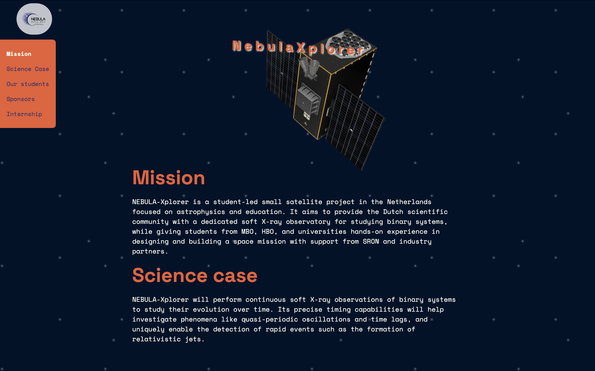
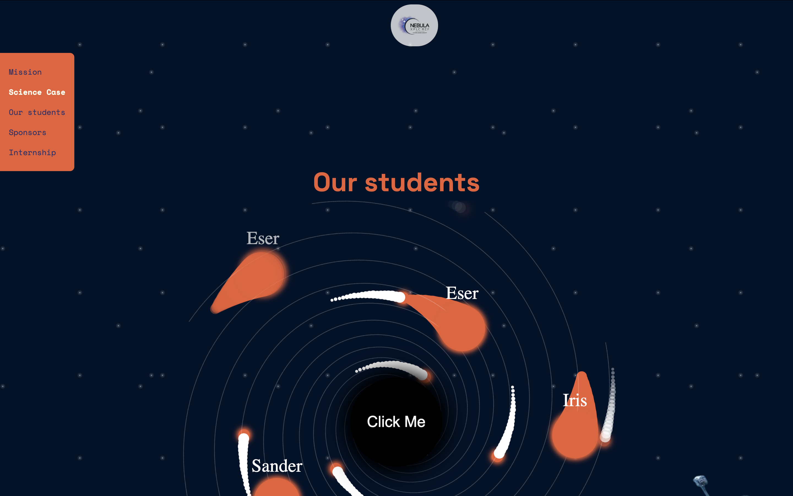
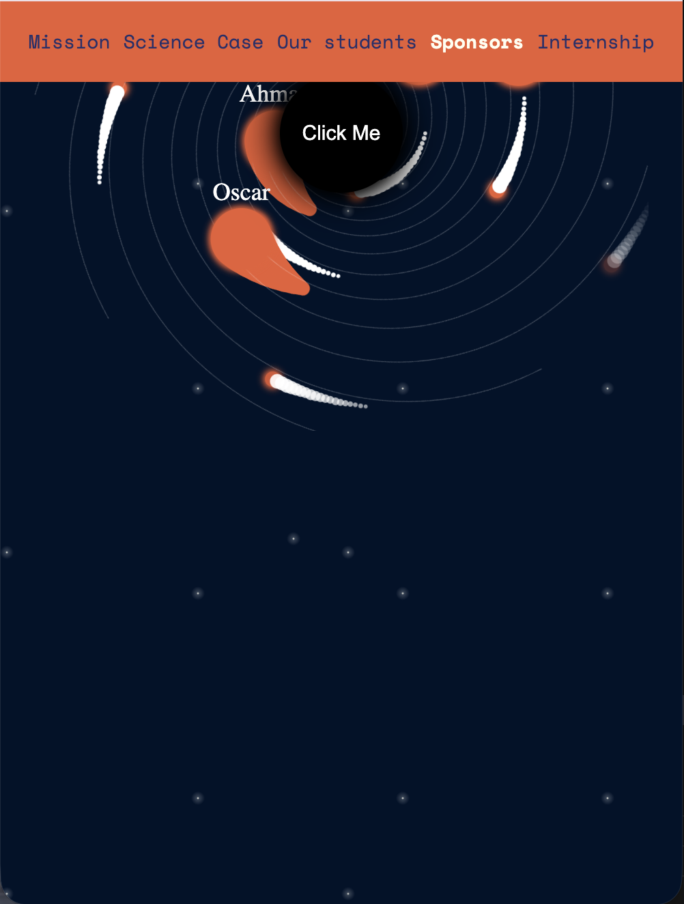
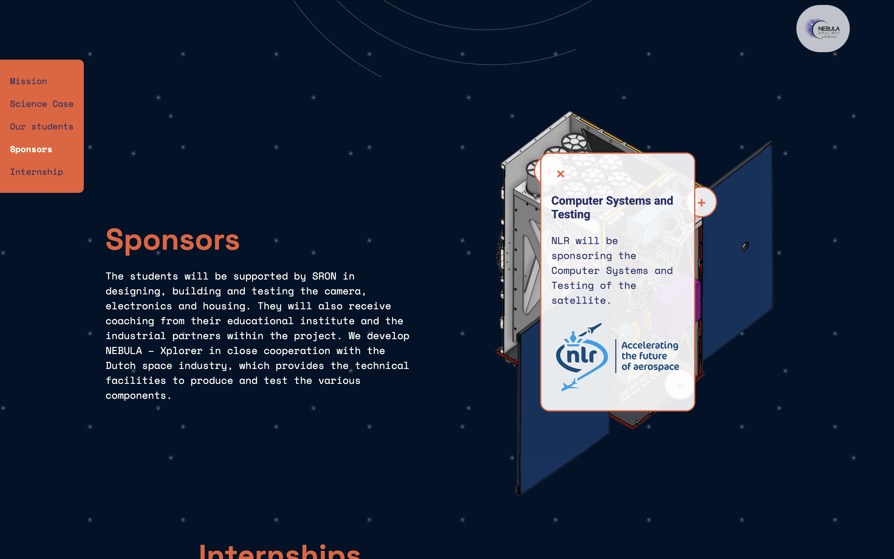

De opdracht


De Hackathon was anders dan alle andere projecten, we moesten in een groep van vier in 3,5 dag een website maken voor een opdrachtgever, de Nebula Xplorer. Dat was pittig. Aan het begin vond ik het lastig om goed van start te gaan in een groepje, zeker omdat de tijd zo krap was. Je wil snel beginnen maar moet ook eerst op één lijn komen met elkaar, en dat kost tijd die je eigenlijk niet hebt. Ik had me vooral verdiept in één onderdeel: het zwarte gat. Samen met docenten heb ik dat uiteindelijk werkend gekregen, maar het was echt een uitdaging. Ik heb er heel veel nieuwe JavaScript van geleerd, meer dan in elk ander project daarvoor.

Wat zou ik anders doen
Als ik het opnieuw zou doen zou ik sneller knopen doorhakken aan het begin van het groepsproces, zodat we niet te veel tijd verliezen met afstemmen. En ik zou eerder om hulp vragen als iets technisch te complex wordt, in plaats van er te lang alleen tegenaan te lopen.
